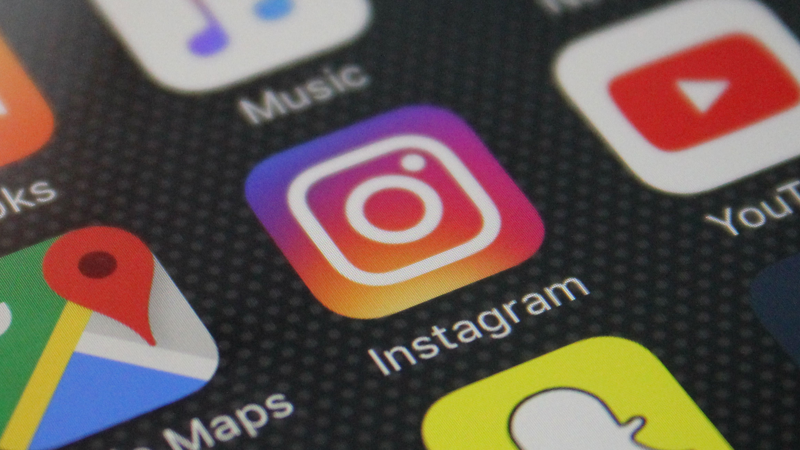
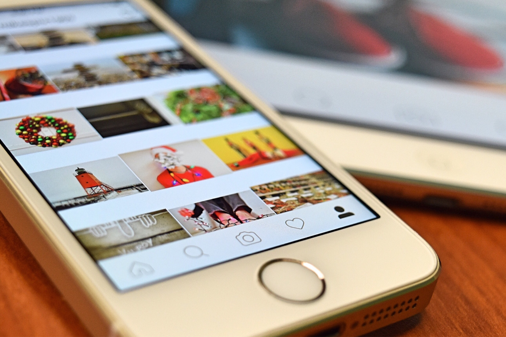

Petite opération communication pour Instagram qui veut éviter de finir comme Facebook
Même si vous la détestez peut-être encore aujourd'hui, Instagram est très fier du passage de la timeline algorithmique à la timeline chronologique. L'application américaine a d'ailleurs convié une partie de la presse américaine ce 1er juin, pour prouver à tout le monde que ce passage était justifié, et pourquoi elle ne comptait pas revenir dessus.
TechCrunch rapporte ainsi qu'avant le changement de juillet 2016 les utilisateurs d'Instagram passaient à côté de 70% de tous les posts et à côté la moitié de ceux de leurs amis. Depuis, les utilisateurs voient 90% des posts de leurs amis, et passent plus de temps sur l'app, et lui permettent donc de gagner plus d'argent grâce aux publicités présentes tous les trois ou quatre posts.
«L'intérêt, la récence et la relation»
Reste que l'on ne savait pas exactement ce qui était pris en compte par l'algorithme, ce qui a donc permis à de nombreuses rumeurs d'exister depuis le changement de juillet 2016. Instagram a donc choisi de donner quelques détails sur son secret. Et les trois facteurs principaux qui déterminent ce que vous voyez dans votre timeline sont «l'intérêt, la récence et la relation»,explique The Verge.
«L'intérêt est le degré auquel Instagram pense qu'un post va vous plaire. Les plus importants arrivent évidemment en tête. La récence signifie simplement qu'Instagram place en priorité les derniers posts, et votre relation avec la personne qui poste la photo est également prise en compte.»
En clair, plus vous interagissez avec quelqu'un (likes, commentaires, ...), plus vous avez de chance de voir les posts remonter en tête de votre flux. Mais ce n'est pas tout, continue The Verge.
«Instagram prend également en compte trois autres facteurs. La fréquence, les abonnements, et l'usage. La fréquence représente le nombre de fois où vous avez ouvert l'app, puisqu'elle veut vous montrer les meilleurs posts depuis sa dernière ouverture. Pour les abonnements, cela signifie que si vous suivez beaucoup de monde, Instagram vous montrera moins de choses d'une personne en particulière pour que vous puissiez voir des choses de tous les gens auxquels vous êtes abonnés. L'usage, c'est le temps passé sur Instagram. Ainsi, l'app détermine quand vous montrer les meilleurs, et si vous verrez les moins importants.»
Ne pas finir comme Facebook
Et on vous voit arriver, non, promis, juré, Instagram assure ne cacher aucun post. Et si vous scrollez suffisamment longtemps, vous finirez par tout voir, affirme l'entreprise américaine à TechCrunch. Instagram a d'ailleurs tenu à mettre fin à d'autres mythes comme le «shadowbanning» ou le fait que publier des stories ou des lives vous permet de remonter plus haut dans les timelines de vos abonnés.
Alors pourquoi une telle opération révélation, pourrait-on se demander. En fait, explique TechCrunch, c'est assez simple. Comme avec Facebook, cette course à l'attention va diminuer le reach, et il vaut mieux prévenir que guérir.
«Les gens vont inévitablement se plaindre qu'Instagram les force à acheter des publicités, mais c'est en réalité une conséquence naturelle et inévitable. En détournant ce problème en poussant le trop-plein de créations vers les stories et en éduquant les utilisateurs sur la façon dont le flux fonctionne, moins ils se plaindront. Facebook n'est plus cool depuis un moment déjà, il faut donc qu'Instagram reste dans nos bonnes grâces.»
Le blog IT ZONE, des actualités High-tech pour tous
Les nouveautés high-tech faciles à comprendre : smartphones, ordinateurs et tablettes, nouvelles technologies et culture geek. Mais aussi tes tutoriels faciles qui vous permettrons de mieux manipuler les outils ITs
Regalez vous !

Commenter